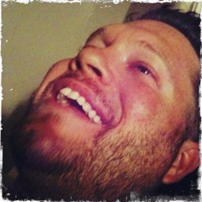

<html><head><title>Paul Crickard</title>
<meta name="viewport" content="width=device-width, initial-scale=1.0, maximum-scale=1.0, user-scalable=no" />
<script src="http://cdn.leafletjs.com/leaflet-0.7.2/leaflet.js"></script>
<script src="http://cdn-geoweb.s3.amazonaws.com/esri-leaflet/1.0.0-rc.5/esri-leaflet.js"></script>
<link rel="stylesheet" href="http://cdn.leafletjs.com/leaflet-0.7.2/leaflet.css" />


<script src="http://cdn-geoweb.s3.amazonaws.com/esri-leaflet-renderers/v0.0.1-beta.2/esri-leaflet-renderers.js"></script>
<style>

html, body,  #map {
        width : 100%;
        height : 100%;
     		   }

</style>
</head>
<body>


<div id="map">
</div><script>


var map = L.map('map', {center: [35.10418, -106.62987],	zoom:14});

//L.tileLayer('http://{s}.tile.osm.org/{z}/{x}/{y}.png').addTo(map);

var result;
L.marker([35.10418, -106.62987]).bindPopup("<h3>Paul Crickard</h3><p>Author of Leaflet.js Essentials. Programmer Analyst in Albuquerque, NM. Interested in GIS, BIM, and technology applied to the urban environment.</p><ul><li><a href='https://twitter.com/pcrickard'>@pcrickard</a></li><li><a href='http://paulcrickard.wordpress.com'>Blog</a></li><li>paulcrickard at gmail</li></ul>").addTo(map).openPopup();


var image = "http://coagisweb.cabq.gov/arcgis/rest/services/Imagery/Aerials2014/ImageServer";

var base = L.esri.imageMapLayer(image, {
  opacity : 1
}).addTo(map);

base.bringToBack();


map.on("click",function(){

alert("Stop clicking me");

});


</script>
</body></html>